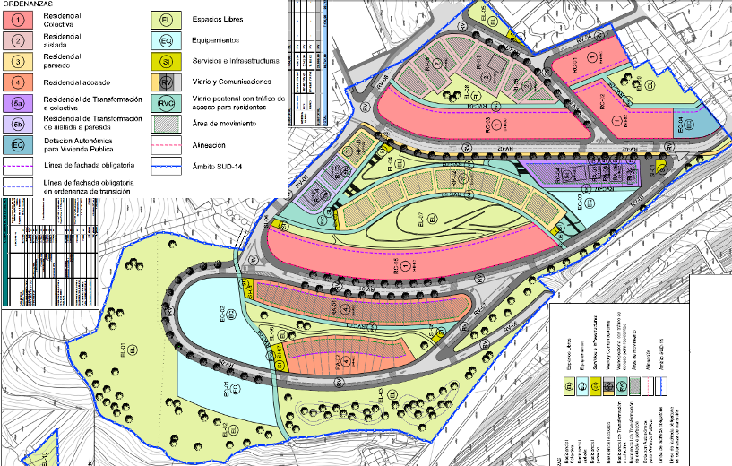
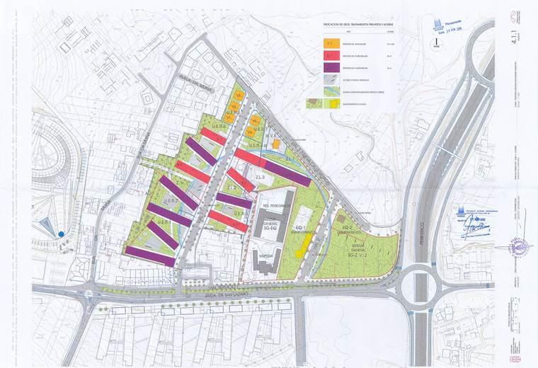
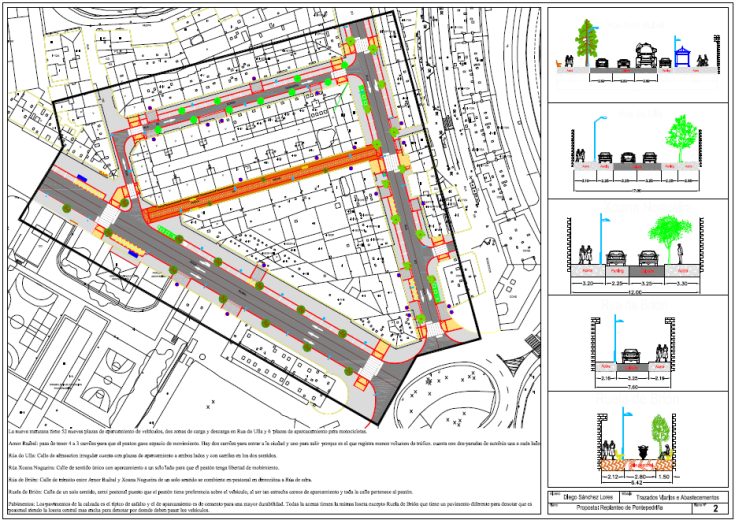
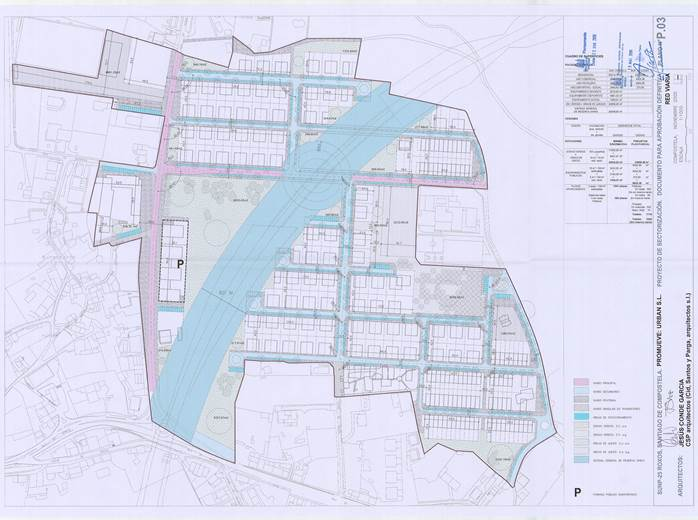

Trabajos
- Obra Centro Terciario y Residencial la Pallaresa ( Centro comercial Santa Coloma de Gramanet).
- Obra centro de tratamiento de residuos del Valles Occidental- Vacarisses (U.T.E. CTR Valles, HERA S.A, FCC S.A. y URBASER S.A).
- Obra Urbanización Fira de Barcelona (Hospitalet de Llobregat).
- Topográficos realizados para el Instituto Cartográfico (ICC) INCASOL (de superficie aproximada de 20 a 30 Ha), en Vic, Falset y Banyoles.
- Ejecución de obras “Escola Bressol” de Polinyà.




- Topográfico del barrio Can Calders en Sant Feliu de Llobregat.
- Topográfico en Can Costa en Sant Vicenç dels Horts (27Ha).
- Plano fachada (conservación) y límite edificio en C/ Córcega 299 (Edificio BIOSCA & BOTEI).
- Obra Pabellón Polideportivo Sector Nord (Sabadell).
- Topográfico de la zona a urbanizar Can Xifre en Breda (20Ha).
- Obra VILANOVETA- Urbanización del sector PP9-Sant Pere de Ribes (replanteos, cúbicos, ejecución de obra).
- MERCABARNA- Plano topográfico, zona del antiguo mercado de la Flor (4Ha).